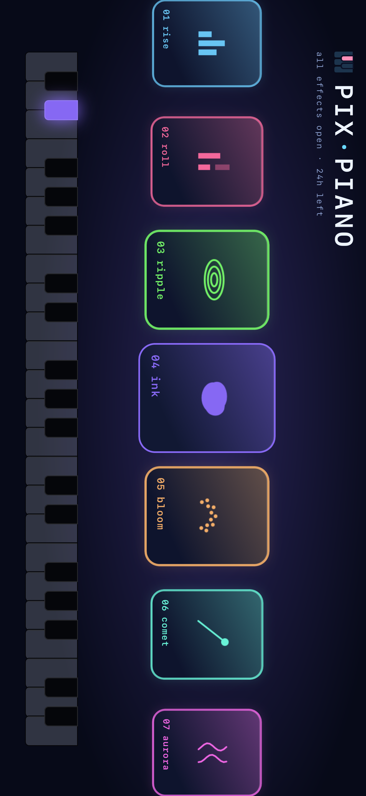
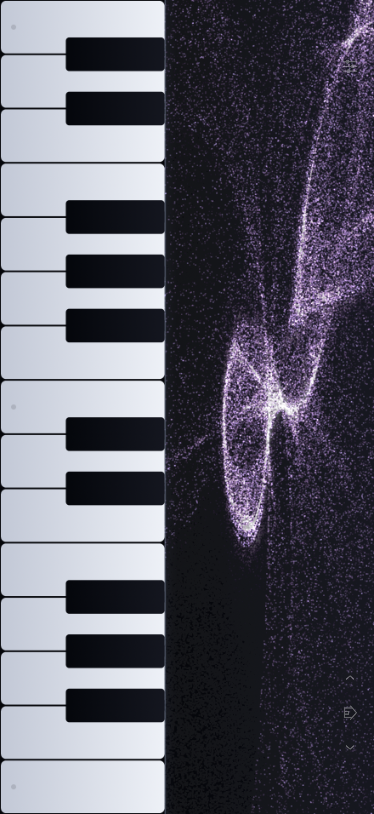
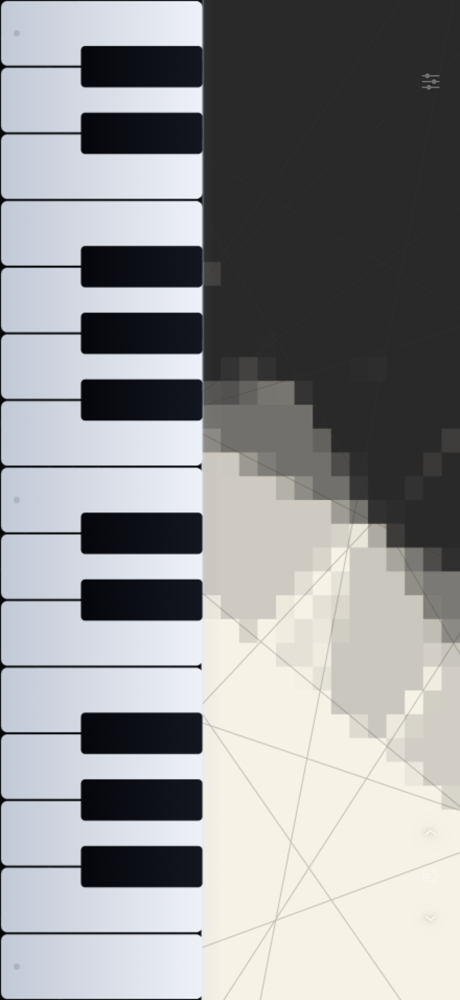

41の情景と、21の音色。
波紋、インク、折り紙、ドット絵の楽隊。さまざまな情景を、ピアノやハープなどの音色と一緒に楽しめます。

自分に合った鍵盤で。
25・32・44鍵から選べます。複数の指で弾いたり、指をすべらせて音をつないだり。


波紋、インク、折り紙、ドット絵の楽隊。さまざまな情景を、ピアノやハープなどの音色と一緒に楽しめます。

25・32・44鍵から選べます。複数の指で弾いたり、指をすべらせて音をつないだり。
